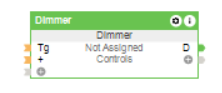

De Loxone Climate Controller is een geavanceerd systeem dat zorgt voor een perfecte balans tussen comfort en energie-efficiëntie in uw huis of kantoor. Met zijn slimme functionaliteiten stelt de Climate Controller u in staat om de temperatuur, luchtvochtigheid en ventilatie nauwkeurig te regelen, waardoor u altijd een aangename en gezonde omgeving kunt creëren. Een van de meest opvallende kenmerken van de Loxone Climate Controller is zijn intelligentie. Het systeem leert van uw voorkeuren en past zich automatisch aan uw levensstijl aan, waardoor het comfortniveau in uw ruimte voortdurend geoptimaliseerd wordt. Of het nu gaat om het reguleren van de verwarming in de winter of het koelen van de ruimte in de zomer, de Climate Controller zorgt ervoor dat u altijd de ideale omstandigheden ervaart. Bovendien integreert de Loxone Climate Controller naadloos met andere slimme apparaten in uw huis, waardoor u volledige controle hebt over uw binnenklimaat via één enkele interface. Met de bijbehorende app kunt u eenvoudig instellingen aanpassen, schema's maken en de prestaties van het systeem monitoren, waar u ook bent. Kortom, met de Loxone Climate Controller kunt u genieten van een comfortabele en gezonde leefomgeving, terwijl u tegelijkertijd energie bespaart en uw ecologische voetafdruk verkleint. Het is de perfecte oplossing voor wie op zoek is naar een geavanceerd en geïntegreerd klimaatbeheersingssysteem.

Hier is een voorbeeldtekst over de Loxone Config Lighting Controller: Loxone Config Lighting Controller: Optimaliseer Uw Verlichting met Gemak De Loxone Config Lighting Controller biedt een geavanceerde oplossing voor het beheren van uw verlichtingssysteem met ongekende flexibiliteit en gebruiksgemak. Met deze controller kunt u uw verlichting aanpassen aan uw behoeften en voorkeuren, en tegelijkertijd energie besparen en uw leefomgeving optimaliseren. Een van de belangrijkste kenmerken van de Loxone Config Lighting Controller is zijn veelzijdigheid. Het systeem ondersteunt een breed scala aan verlichtingsbronnen, waaronder LED's, dimbare lampen en zelfs kleurenveranderende lampen. Hierdoor kunt u verschillende sferen creëren en de verlichting aanpassen aan elke gelegenheid, of het nu gaat om een gezellige avond thuis of een productieve werkdag op kantoor. Met de intuïtieve configuratiesoftware van Loxone kunt u eenvoudig uw verlichtingszones definiëren, lichtscènes instellen en schema's maken voor automatische bediening. Of u nu de helderheid wilt aanpassen, de kleur wilt wijzigen of timers wilt instellen, alles kan worden gedaan met slechts een paar klikken. Bovendien integreert de Loxone Config Lighting Controller naadloos met andere smart home-systemen, waardoor u volledige controle hebt over uw verlichting via één enkele interface. Of het nu gaat om het bedienen van uw verlichting met een app op uw smartphone of het integreren van sensoren voor bewegingsdetectie en daglichtregeling, de mogelijkheden zijn eindeloos. Kortom, met de Loxone Config Lighting Controller kunt u genieten van gepersonaliseerde verlichting op maat van uw levensstijl en behoeften. Het is de ideale oplossing voor wie op zoek is naar een slimme en efficiënte manier om zijn verlichtingssysteem te beheren en te optimaliseren.
Loxone Config Dimmer: Volledige Controle over Uw Verlichting De Loxone Config Dimmer biedt een geavanceerde oplossing voor het beheren van de verlichting in uw huis met ongeëvenaarde precisie en veelzijdigheid. Of u nu op zoek bent naar subtiele ambianceverlichting of heldere werkverlichting, deze dimmer biedt de flexibiliteit om aan al uw behoeften te voldoen. Een van de meest opvallende kenmerken van de Loxone Config Dimmer is zijn aanpasbaarheid. Met zijn ondersteuning voor verschillende types lichtbronnen, waaronder dimbare LED's, gloeilampen en halogeenlampen, kunt u de perfecte sfeer creëren voor elke gelegenheid. Of het nu gaat om een ontspannen avond thuis of een levendig feestje, met de Loxone Config Dimmer heeft u altijd de controle over uw verlichting. Dankzij de geavanceerde configuratiesoftware van Loxone kunt u de dimmer eenvoudig aanpassen aan uw specifieke wensen. Met slechts een paar klikken kunt u de helderheid van uw verlichting aanpassen, dimprofielen instellen en timers programmeren voor automatische bediening. Bovendien biedt de dimmer de mogelijkheid om verlichtingszones te creëren, waardoor u verschillende delen van uw huis afzonderlijk kunt regelen. De Loxone Config Dimmer integreert naadloos met andere smart home-systemen, waardoor u volledige controle hebt over uw verlichting via één enkele interface. Of u nu uw verlichting wilt bedienen met een app op uw smartphone, stemgestuurde assistenten wilt gebruiken of bewegingssensoren wilt integreren voor handsfree bediening, de mogelijkheden zijn eindeloos. Kortom, met de Loxone Config Dimmer kunt u genieten van gepersonaliseerde verlichting die is afgestemd op uw levensstijl en behoeften. Het biedt een naadloze en intuïtieve manier om uw verlichtingssysteem te beheren en te optimaliseren, waardoor u het comfort en gemak in uw huis naar een hoger niveau tilt.

Loxone Config Heating Curve: Optimaliseer Uw Verwarming voor Comfort en Efficiëntie De Loxone Config Heating Curve biedt een geavanceerde oplossing voor het regelen van uw verwarmingssysteem, waardoor u een optimaal comfortniveau kunt handhaven terwijl u tegelijkertijd energie bespaart. Met zijn intelligente functionaliteiten en aanpasbare instellingen stelt deze verwarmingscurve u in staat om de warmte in uw huis nauwkeurig te regelen, ongeacht de buitentemperatuur. Een van de belangrijkste kenmerken van de Loxone Config Heating Curve is zijn flexibiliteit. Het systeem past zich automatisch aan veranderende omstandigheden aan en optimaliseert de verwarmingscyclus op basis van uw specifieke behoeften en voorkeuren. Of het nu gaat om het verwarmen van individuele kamers, het regelen van de watertemperatuur of het aanpassen van de verwarmingsintensiteit, de Heating Curve zorgt ervoor dat uw huis altijd comfortabel en gezellig is. Dankzij de geavanceerde configuratiesoftware van Loxone kunt u de verwarmingscurve eenvoudig aanpassen aan uw levensstijl en voorkeuren. Met behulp van grafieken en diagrammen kunt u de verwarmingsinstellingen nauwkeurig afstemmen op uw dagelijkse routine en gewoonten. Bovendien biedt de Heating Curve de mogelijkheid om verschillende verwarmingszones te definiëren, waardoor u de temperatuur in verschillende delen van uw huis afzonderlijk kunt regelen. De Loxone Config Heating Curve integreert naadloos met andere smart home-systemen, waardoor u volledige controle hebt over uw verwarmingssysteem via één enkele interface. Of u nu uw verwarming wilt bedienen met een app op uw smartphone, timers wilt instellen voor automatische bediening of sensoren wilt gebruiken voor temperatuurregeling, de mogelijkheden zijn eindeloos. Kortom, met de Loxone Config Heating Curve kunt u genieten van een comfortabele en energiezuinige verwarmingservaring die is afgestemd op uw levensstijl en behoeften. Het biedt een geavanceerde en geïntegreerde oplossing voor het optimaliseren van uw binnenklimaat, waardoor u het hele jaar door kunt genieten van een aangename en gezonde leefomgeving.